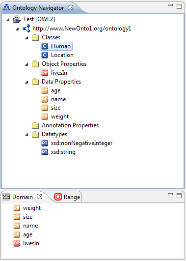

The Domain View is a view of the OWL Perspective and part of the core of the NeOn Toolkit. The Domain View displays all properties, which do have the selected Entity as domain. This view is similar to the Range View.

In the screen shot the class "Human" is in the Ontology Navigator selected and the Domain View displays a list of all properties, which do have the domain "Human". Selecting a property from the list will display its details in the Entity Properties panel on the right part of the screen.